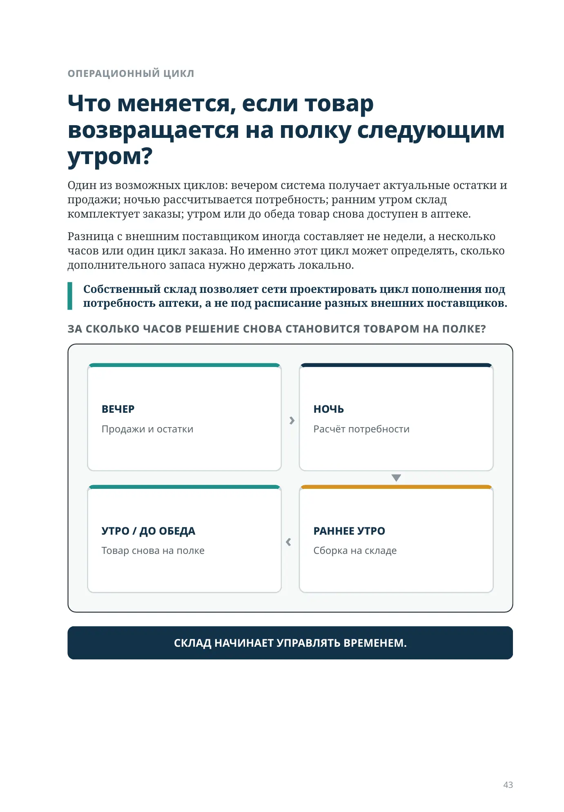
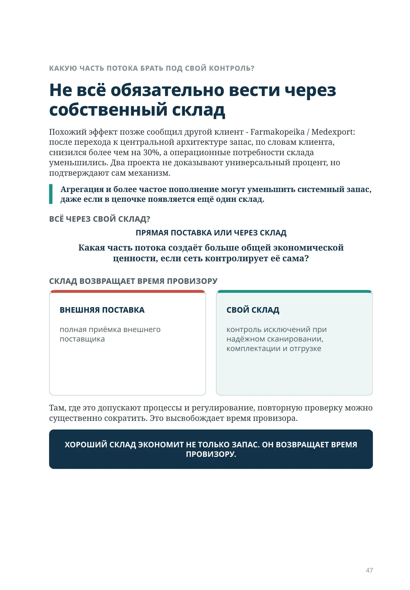
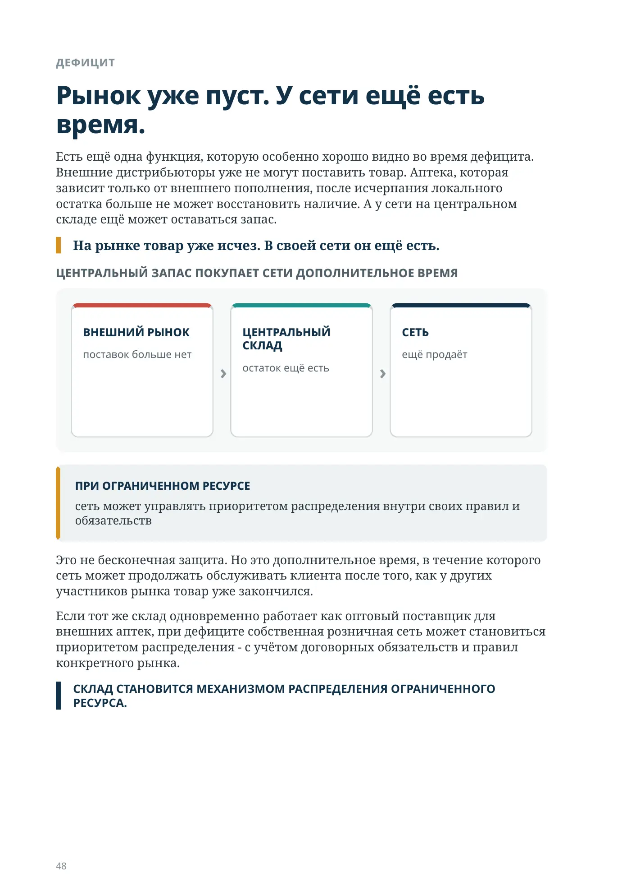
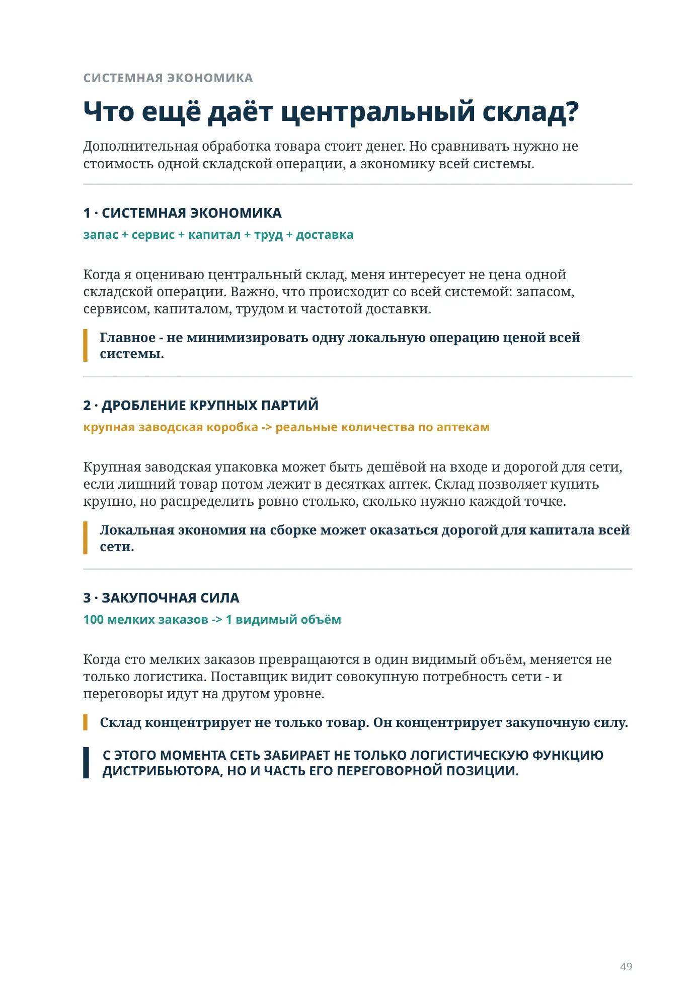
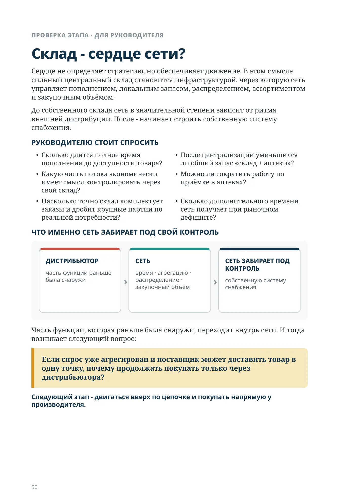

Зачем создавать ещё одно место хранения, если мы хотим уменьшить запас?
ЧАСТЬ II · ЭТАП 4
Зачем создавать ещё одно место хранения, если мы хотим уменьшить запас?
Время пополнения, агрегация и централизованное снабжение
Собственный склад на первый взгляд выглядит как противоречие. Дистрибьютор и так может привезти товар прямо в точку. Зачем добавлять помещение, людей, обработку, транспорт и ещё одно место, где будет лежать запас?
Можно добавить склад - и уменьшить общий запас сети.
Ответ становится понятен, если перестать смотреть на склад как на помещение.
Склад нужен не для того, чтобы хранить больше. Он нужен, чтобы управлять временем пополнения и общим запасом системы.
ДОБАВИЛИ СКЛАД. ПОЧЕМУ ЗАПАСА СТАЛО МЕНЬШЕ?
БЕЗ ЦЕНТРАЛИЗАЦИИ
МНОГО ЛОКАЛЬНЫХ СТРАХОВЫХ ЗАПАСОВ
С ЦЕНТРАЛЬНЫМ СКЛАДОМ
ОДИН ОБЩИЙ РИТМ ПОПОЛНЕНИЯ
ЕЩЁ ОДНО МЕСТО ХРАНЕНИЯ - ИЛИ НОВЫЙ СПОСОБ УПРАВЛЯТЬ ПОТОКОМ?
СТРУКТУРНЫЙ ПОРОГ
Когда отсутствие склада начинает стоить дороже самого склада?
Для небольшой сети прямые поставки дистрибьюторов могут быть экономически оптимальны. По мере роста увеличивается другая стоимость - стоимость децентрализованного снабжения.
КОГДА ПОЯВЛЯЕТСЯ СТРУКТУРНЫЙ ПОРОГ
- страховой запас дублируется в десятках точек
- графики поставщиков заставляют держать дополнительный страховой запас
- крупные партии плохо соответствуют локальному спросу
- излишек одной аптеки трудно быстро превратить в наличие другой
- приёмка множества внешних поставок забирает время аптек
- совокупный спрос уже позволяет крупную закупку, но сеть не умеет принять и распределить объём
Сравнивать нужно не стоимость склада с нулём, а стоимость склада со стоимостью всей децентрализованной системы снабжения.
По моему опыту, многие сети откладывают этот переход и долго остаются в диапазоне примерно 10-20 аптек. Это не универсальный порог: география, плотность сети, модель дистрибуции и рынок различаются.
ЧТО НА САМОМ ДЕЛЕ ОПРЕДЕЛЯЕТ НЕОБХОДИМЫЙ ЗАПАС?
ВРЕМЯ ПОПОЛНЕНИЯ
ОЖИДАНИЕ ДО СЛЕДУЮЩЕГО ЗАКАЗА
ВРЕМЯ ПОСТАВКИ ДО ДОСТУПНОСТИ
Считать нужно время пополнения: от момента, когда продажа создаёт необходимость восстановить запас, до момента, когда пополнение снова доступно для продажи.
На практике этот показатель часто недооценивают. В отчётах обычно виден срок доставки, но для запаса важен весь цикл: когда возникла потребность, когда сформирован заказ, когда его собрали, доставили, приняли и когда товар снова оказался на полке. Несколько лишних часов на каждом этапе превращаются в дополнительный запас по всей сети.
ВРЕМЯ И ДЛИННЫЙ ХВОСТ
Чем длиннее цикл, тем больше запаса приходится финансировать
Запас защищает не календарь. Он защищает время до следующего надёжного пополнения.
ПРОСТАЯ МАТЕМАТИКА
1 ДЕНЬ
3
упаковки
2 ДНЯ
6
упаковок
30 ДНЕЙ
90
упаковок
При стабильном спросе три упаковки в день это минимум без дополнительного страхового запаса на колебания спроса и поставок.
ДЛИННЫЙ ХВОСТ АПТЕЧНОГО АССОРТИМЕНТА
Продажа раз в две-три недели для аптечного ассортимента - не исключение. Для большой части позиций это нормальная частота.
Если внешний поставщик приходит раз в неделю, точка может держать вторую единицу, чтобы не остаться без товара после первой продажи. Если свой склад возвращает проданную упаковку следующим утром, такой двойной локальный страховой запас часто уже не нужен.
НА ОДНОМ SKU РАЗНИЦА МАЛА. НА ТЫСЯЧАХ SKU И СОТНЯХ АПТЕК ОНА ПРЕВРАЩАЕТСЯ В КАПИТАЛ.
ОПЕРАЦИОННЫЙ ЦИКЛ
Что меняется, если товар возвращается на полку следующим утром?
Один из возможных циклов: вечером система получает актуальные остатки и продажи; ночью рассчитывается потребность; ранним утром склад комплектует заказы; утром или до обеда товар снова доступен в аптеке.
Разница с внешним поставщиком иногда составляет не недели, а несколько часов или один цикл заказа. Но именно этот цикл может определять, сколько дополнительного запаса нужно держать локально.
Собственный склад позволяет сети проектировать цикл пополнения под потребность аптеки, а не под расписание разных внешних поставщиков.
ЗА СКОЛЬКО ЧАСОВ РЕШЕНИЕ СНОВА СТАНОВИТСЯ ТОВАРОМ НА ПОЛКЕ?
ВЕЧЕР
Продажи и остатки
НОЧЬ
Расчёт потребности
РАННЕЕ УТРО
Сборка на складе
УТРО / ДО ОБЕДА
Товар снова на полке
СКЛАД НАЧИНАЕТ УПРАВЛЯТЬ ВРЕМЕНЕМ.
АГРЕГАЦИЯ
Почему сто аптек требуют меньше общего страхового запаса, чем сто независимых запасов?
В отдельной аптеке спрос на конкретный товар может быть неровным: сегодня - ноль, завтра - одна или две упаковки, потом несколько дней ничего. Если каждая точка самостоятельно защищается от такой неопределённости, страховой запас дублируется по всей сети.
Центральный склад видит совокупный спрос многих точек. Эффект особенно силён, когда локальные колебания хотя бы частично несинхронны. Если все точки одновременно испытывают одинаковый всплеск или дефицит, объединение риска помогает меньше.
Склад объединяет не только объём. Он частично объединяет локальную неопределённость.
УЧЕБНАЯ МОДЕЛЬ АГРЕГАЦИИ
Это не данные конкретного клиента и не обещание результата для любой сети. Возьмём простой пример.
- 100 аптек
- один товар продаётся в каждой аптеке примерно раз в неделю
- без собственного склада пополнение приходит примерно раз в неделю
- каждая точка держит две упаковки, чтобы не остаться без товара после одной продажи
ДО ЦЕНТРАЛЬНОГО СКЛАДА
2 УПАКОВКИ локального страхового запаса × 100 АПТЕК = 200 УПАКОВОК в системе
Одна страховая единица дублируется сто раз.
БЕЗ ЦЕНТРАЛИЗАЦИИ
Каждая аптека держит собственный локальный страховой запас.
100 ЛОКАЛЬНЫХ СТРАХОВЫХ ЗАПАСОВ
Аптека 1
2 ед.
Аптека 2
2 ед.
Аптека 3
2 ед.
Аптека 4
2 ед.
Аптека 5
2 ед.
Аптека 6
2 ед.
Аптека 7
2 ед.
Аптека 8
2 ед.
Аптека 9
2 ед.
Аптека 10
2 ед.
… (всего 100 аптек)
100 аптек × 2 единицы
200
ЕДИНИЦ В
СИСТЕМЕ
С ЦЕНТРАЛЬНЫМ СКЛАДОМ
Часть страхового запаса консолидируется в одном месте.
ЦЕНТРАЛЬНЫЙ СКЛАД · 29-43 ед.
Аптека 1
1 ед.
Аптека 2
1 ед.
Аптека 3
1 ед.
Аптека 4
1 ед.
Аптека 5
1 ед.
Аптека 6
1 ед.
Аптека 7
1 ед.
Аптека 8
1 ед.
Аптека 9
1 ед.
Аптека 10
1 ед.
… (всего 100 аптек)
100 аптек × 1 единица + 29-43 единицы на складе
129-143
ЕДИНИЦ В
СИСТЕМЕ
Учебная модель. Результат зависит от поставок, времени пополнения, спроса, упаковки и требуемого уровня наличия.
МОДЕЛЬ И ПРАКТИКА
Когда механизм работает в реальной сети?
ЧТО ВАЖНО В МОДЕЛИ
- склад пополняет аптеки ежедневно или на следующее утро
- центральный склад сам пополняется достаточно часто и надёжно
- эффект зависит от частоты поставок, спроса, корреляции, упаковки и требуемого наличия
Запоминать нужно не процент, а механизм: одна дублирующая страховая единица в каждой аптеке заменяется гораздо меньшим общим запасом выше по цепочке.
ПРАКТИКА · «ГОДОВАЛОВ»
В одном из проектов мы перестроили архитектуру снабжения: вместо независимых крупных поставок на региональные склады товар шёл на центральный склад, а оттуда - небольшими частыми партиями в регионы.
30%
СУММАРНЫЙ СКЛАДСКОЙ ЗАПАС
По моей памяти, суммарный складской запас снизился как минимум примерно на 30%. Особенно заметно уменьшился запас на региональных складах. Параллельно сократилась потребность в площади, стала равномернее приёмка и снизилась потребность в складском труде.
Это историческое наблюдение конкретного проекта, а не универсальный норматив.
Если центральный склад сам пополняется редко или нестабильно, ему потребуется больший запас, и эффект будет другим.
Для меня в этом кейсе важен не сам результат 30%. Важен механизм: запас перестал дублироваться в десятках точек, а быстрый ритм пополнения позволил держать меньше страхового запаса локально. Если ритм поставок становится редким или нестабильным, этот эффект быстро уменьшается.
КАКУЮ ЧАСТЬ ПОТОКА БРАТЬ ПОД СВОЙ КОНТРОЛЬ?
Не всё обязательно вести через собственный склад
Похожий эффект позже сообщил другой клиент - Farmakopeika / Medexport: после перехода к центральной архитектуре запас, по словам клиента, снизился более чем на 30%, а операционные потребности склада уменьшились. Два проекта не доказывают универсальный процент, но подтверждают сам механизм.
Агрегация и более частое пополнение могут уменьшить системный запас, даже если в цепочке появляется ещё один склад.
ВСЁ ЧЕРЕЗ СВОЙ СКЛАД?
ПРЯМАЯ ПОСТАВКА ИЛИ ЧЕРЕЗ СКЛАД
Какая часть потока создаёт больше общей экономической ценности, если сеть контролирует её сама?
СКЛАД ВОЗВРАЩАЕТ ВРЕМЯ ПРОВИЗОРУ
ВНЕШНЯЯ ПОСТАВКА
полная приёмка внешнего поставщика
СВОЙ СКЛАД
контроль исключений при надёжном сканировании, комплектации и отгрузке
Там, где это допускают процессы и регулирование, повторную проверку можно существенно сократить. Это высвобождает время провизора.
ХОРОШИЙ СКЛАД ЭКОНОМИТ НЕ ТОЛЬКО ЗАПАС. ОН ВОЗВРАЩАЕТ ВРЕМЯ ПРОВИЗОРУ.
ДЕФИЦИТ
Рынок уже пуст. У сети ещё есть время.
Есть ещё одна функция, которую особенно хорошо видно во время дефицита. Внешние дистрибьюторы уже не могут поставить товар. Аптека, которая зависит только от внешнего пополнения, после исчерпания локального остатка больше не может восстановить наличие. А у сети на центральном складе ещё может оставаться запас.
На рынке товар уже исчез. В своей сети он ещё есть.
ЦЕНТРАЛЬНЫЙ ЗАПАС ПОКУПАЕТ СЕТИ ДОПОЛНИТЕЛЬНОЕ ВРЕМЯ
ВНЕШНИЙ РЫНОК
поставок больше нет
ЦЕНТРАЛЬНЫЙ СКЛАД
остаток ещё есть
СЕТЬ
ещё продаёт
Это не бесконечная защита. Но это дополнительное время, в течение которого сеть может продолжать обслуживать клиента после того, как у других участников рынка товар уже закончился.
Если тот же склад одновременно работает как оптовый поставщик для внешних аптек, при дефиците собственная розничная сеть может становиться приоритетом распределения - с учётом договорных обязательств и правил конкретного рынка.
СКЛАД СТАНОВИТСЯ МЕХАНИЗМОМ РАСПРЕДЕЛЕНИЯ ОГРАНИЧЕННОГО РЕСУРСА.
СИСТЕМНАЯ ЭКОНОМИКА
Что ещё даёт центральный склад?
Дополнительная обработка товара стоит денег. Но сравнивать нужно не стоимость одной складской операции, а экономику всей системы.
1 · СИСТЕМНАЯ ЭКОНОМИКА
запас + сервис + капитал + труд + доставка
Когда я оцениваю центральный склад, меня интересует не цена одной складской операции. Важно, что происходит со всей системой: запасом, сервисом, капиталом, трудом и частотой доставки.
Главное - не минимизировать одну локальную операцию ценой всей системы.
2 · ДРОБЛЕНИЕ КРУПНЫХ ПАРТИЙ
крупная заводская коробка -> реальные количества по аптекам
Крупная заводская упаковка может быть дешёвой на входе и дорогой для сети, если лишний товар потом лежит в десятках аптек. Склад позволяет купить крупно, но распределить ровно столько, сколько нужно каждой точке.
Локальная экономия на сборке может оказаться дорогой для капитала всей сети.
3 · ЗАКУПОЧНАЯ СИЛА
100 мелких заказов -> 1 видимый объём
Когда сто мелких заказов превращаются в один видимый объём, меняется не только логистика. Поставщик видит совокупную потребность сети - и переговоры идут на другом уровне.
Склад концентрирует не только товар. Он концентрирует закупочную силу.
С ЭТОГО МОМЕНТА СЕТЬ ЗАБИРАЕТ НЕ ТОЛЬКО ЛОГИСТИЧЕСКУЮ ФУНКЦИЮ ДИСТРИБЬЮТОРА, НО И ЧАСТЬ ЕГО ПЕРЕГОВОРНОЙ ПОЗИЦИИ.
ПРОВЕРКА ЭТАПА · ДЛЯ РУКОВОДИТЕЛЯ
Склад - сердце сети?
Сердце не определяет стратегию, но обеспечивает движение. В этом смысле сильный центральный склад становится инфраструктурой, через которую сеть управляет пополнением, локальным запасом, распределением, ассортиментом и закупочным объёмом.
До собственного склада сеть в значительной степени зависит от ритма внешней дистрибуции. После - начинает строить собственную систему снабжения.
РУКОВОДИТЕЛЮ СТОИТ СПРОСИТЬ
- Сколько длится полное время пополнения до доступности товара?
- После централизации уменьшился ли общий запас «склад + аптеки»?
- Какую часть потока экономически имеет смысл контролировать через свой склад?
- Можно ли сократить работу по приёмке в аптеках?
- Насколько точно склад комплектует заказы и дробит крупные партии по реальной потребности?
- Сколько дополнительного времени сеть получает при рыночном дефиците?
ЧТО ИМЕННО СЕТЬ ЗАБИРАЕТ ПОД СВОЙ КОНТРОЛЬ
ДИСТРИБЬЮТОР
часть функции раньше была снаружи
СЕТЬ
время · агрегацию · распределение · закупочный объём
СЕТЬ ЗАБИРАЕТ ПОД КОНТРОЛЬ
собственную систему снабжения
Часть функции, которая раньше была снаружи, переходит внутрь сети. И тогда возникает следующий вопрос:
Если спрос уже агрегирован и поставщик может доставить товар в одну точку, почему продолжать покупать только через дистрибьютора?
Следующий этап - двигаться вверх по цепочке и покупать напрямую у производителя.
Частота пополнения определяет не только запас, но и физическую ёмкость точки
Если центральный склад способен надёжно пополнять аптеку чаще, локальная точка может держать меньше дней запаса при том же целевом наличии. В автоматизированной аптеке это способно уменьшать требуемую ёмкость робота.
Поэтому склад, автоматический заказ и роботизированное хранение нужно считать одной системой, а не тремя независимыми проектами.
Собственный распределительный центр может снимать с аптеки ещё и часть локальной приёмки: точная комплектация, стандартизированный внутренний контейнер и централизованный контроль позволяют точке больше работать с исключениями. Для независимой аптеки, принимающей поток непосредственно от нескольких поставщиков, автоматизация входящего товара поэтому может иметь отдельную ценность.